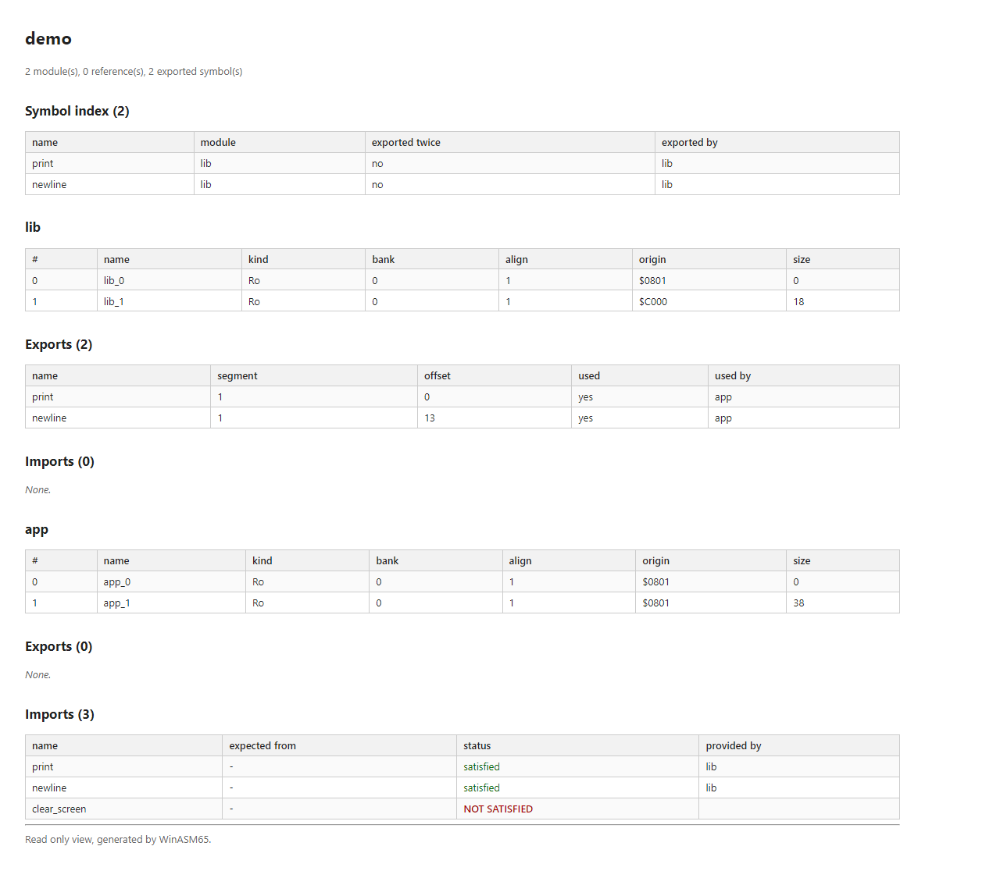

Modules, linker, viewer
Besides assembling straight to a burnable image, WinASM65 can produce relocatable .w65 modules: code that publishes names rather than addresses. Modules are packed into .w65a archives, joined by a linker that resolves names and patches every site that depends on one, and inspected with an offline HTML viewer.
Why modules
The module system follows the model of Windows DLLs, deliberately not cc65's O65 format: the goal is to share routines between projects, not to be compatible with ca65 and ld65. A DLL exposes names, not addresses, and the linker resolves symbol names between modules. A module therefore tells apart a symbol it defines (and may export) from a symbol it references (which must be resolved elsewhere).
| Windows DLL concept | WinASM65 equivalent |
|---|---|
__declspec(dllexport) | the .export directive in the source |
dllimport | the .import directive, resolved by name |
| Export and import tables | the same, in the .w65 file |
| Image base, rebasing | segment origin plus relocations |
LoadLibrary | the runtime stub (text targets) or the GEOS kernal |
| Dependency Walker | the HTML viewer, and the unsatisfied-import error |
The module path sits beside the direct mode, never in its place. Direct mode still writes a blob placed at its real address, burnable without a linker. Module mode writes a .w65 that is not burnable: it holds unplaced segments and unresolved relocations. WinASM65 link turns modules into a burnable image again.
The three consumers accept .w65 modules and .w65a archives alike; link and geos expand an archive into its members (and the archives it references) before the linker runs.
.export and .import
Two directives turn an ordinary unit into a module. Both are handled in ModuleDirectives.cs; their arguments are split on commas and white space.
| Directive | Effect |
|---|---|
.export a, b, … | Publishes one or more names. Each name must already be defined at that line: the directive looks the symbol up when it runs, so an .export placed before the definition fails with “Exported symbol 'x' is not defined in this unit.” Put the exports after the code, as lib.asm does below. |
.import name.import name, module | Declares a name another module provides. One symbol per line: the first word is the symbol, a second word is the module expected to export it. .import print, newline therefore imports print from a module called newline; it does not import two names. |
A declared import is what lets a module assemble on its own: when the unit ends, a name that is still undefined is an error (“Undefined symbol: x. Define it, or declare it with .import when another module provides it.”) unless an .import declared it. The expected module name is advisory: the linker resolves by symbol name alone, and the viewer shows the name in its “expected from” column.
Building a module
Choosing the output format w65 writes a module instead of an executable. The two sample sources used for the screenshots, from tools/screenshots/samples/:
; A tiny library: prints the zero-terminated string at (ptr) on a C64.
CHROUT = $FFD2
ptr = $FB
.org $C000
print:
ldy #0
@next:
lda (ptr),y
beq @done
jsr CHROUT
iny
bne @next
@done:
rts
newline:
lda #13
jmp CHROUT
.export print, newline; The program: imports print and newline from the library.
ptr = $FB
.import print
.import newline
.import clear_screen
.org $0801
start:
jsr clear_screen
lda #<message
sta ptr
lda #>message
sta ptr+1
jsr print
jsr newline
rts
message:
.asciiz "HELLO FROM WINASM65"lib.asm (left) and app.asm (right). Nothing in the samples exports clear_screen: the import is left unsatisfied on purpose, so that the viewer has something to flag.
WinASM65 -f lib.asm -t c64 -format w65 -o lib.w65
WinASM65 -f app.asm -t c64 -format w65 -o app.w65What BuildModule in AssemblerEngine.cs does at the end of the assembly:
- A module needs a declaration. A unit with no
.exportand no.importproduces no module, and-format w65stops with “Format 'w65' needs a module: the source declares no .export and no .import.” - One segment per origin block. The emitter holds one flat buffer; it is cut back at each recorded origin, so a unit with several
.orggives several segments, each with its own origin, bytes and relocations. Segments are named after the module in source order:lib_0,lib_1… A unit with a single block gets one segment named after the module itself. Empty blocks are kept as zero-length segments rather than merged into a neighbour. - The target's load address is a block too. With
-t c64the default origin$0801opens the first block, so both samples get an empty segment_0at$0801, and their code is in segment_1. The linker skips empty segments. - Exports become a segment index and an offset inside that segment, never an absolute address. An exported label of the second block points at the second segment.
- Local labels: every other label the source defined (including
@locallabels, stored asprint@next) goes into the module's table of local labels, so that the module's own references to them can be relocated. Anonymous labels and constants are left out. - Relocations recorded by the emitter are re-pointed at the segment their buffer offset falls in. Every operand or data field whose expression read a name produces one.
- Every segment is of kind
ro, alignment 1, bank 0: the format can describerw,bss, alignment and banks, but the assembler does not yet produce them.
Inside a module
In memory a module is a ModuleImage (Modules/ModuleImage.cs): five lists, written to disk in this order by W65Format.
| Part | Class | Holds |
|---|---|---|
| Segments | ModuleSegment | Name, bytes, kind (Ro, Rw, Bss), alignment, bank, and the origin the unit was written against. The origin is not a placement: it is where the linker puts the segment when nothing else constrains it. A bss segment reserves space and stores no bytes. |
| Exports | ModuleExport | Name, segment index, offset in the segment. |
| Imports | ModuleImport | Name, and the module expected to provide it (may be empty). A name is imported once. |
| Local labels | ModuleSymbol | Name, segment index, offset: the labels defined and not exported. A redefinition replaces the earlier entry. |
| Relocations | RelocationRecord | Segment, offset, width (1 or 2), type, the address as assembled, the target symbol, and the source file and line the site came from. |
The provenance is the point of the relocation record: a failed resolution can name the symbol, the module and the line that needs it, instead of a number in an unknown file.
The .w65 file format
The normative description is docs/format-module.md (in French); the layout below is the one W65Format.cs writes and reads. All integers are little-endian. A string is a 4-byte length followed by that many UTF-8 bytes. Each table starts with a 4-byte entry count.
[ header 16 bytes ]
[ segment table ]
[ export table ]
[ import table ]
[ relocation table ]
[ local label table 1.1+ ]
[ segment data ]Header
| Offset | Size | Field |
|---|---|---|
$00 | 4 | magic: W65 ($57 $36 $35) and a zero byte |
$04 | 2 | format version, major (1) |
$06 | 2 | format version, minor (1) |
$08 | 4 | length of the tables |
$0C | 4 | absolute position of the segment data |
The magic is W65, not o65: a file that starts with o65 is a cc65 object, not a WinASM65 module. A reader rejects any major version other than 1.
Tables
| Table | Fields of each entry |
|---|---|
| Segments | name (string) · size (4) · alignment (4) · kind (1: 0 ro, 1 rw, 2 bss) · bank (1, $FF for bss) · file offset (4) · origin (2) |
| Exports | name (string) · segment index (4) · offset in the segment (4) |
| Imports | name (string) · expected module (string, empty when not given) |
| Relocations | segment index (4) · offset in the segment (4) · width (1) · type (1) · address as assembled (2) · target symbol (string) · source file (string) · source line (4) |
| Local labels | name (string) · segment index (4) · offset (4) |
- Absolute offsets. A segment's file offset is measured from the start of the file, like every other position. Since the data follows the tables, its base is only known once the tables are sized: the writer serializes the tables once to measure them, then again with the real offsets. A
bssor empty segment has offset 0 and no bytes. - Version 1.1 added the local label table. It is the last table and the minor version says whether it is there: a 1.0 reader stops after the relocations and ignores it, and a 1.0 file reads back with an empty table instead of labels invented from code bytes.
- Corrupt files produce a diagnostic (“bad magic”, “truncated”, “a table runs past the end of the file”, “segment data runs past the end of the file”) rather than an exception.
Relocation types
The type of a site is decided by RelocationRecord.TypeFor from the role of the expression (address, immediate, branch, data), from the width left after the zero-page optimization, and from a < or > byte selector. Never from the numeric value: lda #$05 and lda label look alike, only the addressing mode tells them apart.
| Code | Type | Width | Example | What the linker writes |
|---|---|---|---|---|
| 1 | Zp8 | 1 | lda (ptr),y | a zero-page address; error if above $FF |
| 2 | Abs16 | 2 | jsr print | the 16-bit address, low byte first |
| 3 | Imm8 | 1 | lda #MASK | a one-byte value; error if above $FF |
| 4 | Rel8 | 1 | bne @next | the signed distance from the end of the field; error outside -128…127 |
| 5 | Data8 | 1 | .byte COUNT | a one-byte value; error if above $FF |
| 6 | Data16 | 2 | .word TABLE | the 16-bit value |
| 7 | Seg | 2 | — | a segment address; defined, never produced by the assembler |
| 8 | LowByte | 1 | lda #<message | the low byte of the resolved value |
| 9 | HighByte | 1 | lda #>message | the high byte of the resolved value |
The selector matters on imported names: the evaluator cannot apply < or > to a value it does not know yet, so the choice travels in the relocation type and the linker applies it after placement. On a two-byte field the selector is dropped, and only the outermost selector counts. The specification in docs/format-module.md lists abs8, abs16, zp8, rel8 and seg; the code has no abs8, and adds imm8, data8/data16 (needed by GEOS) and low8/high8 (found by running linked code on an emulated NES).
Archives
An archive (.w65a, ModuleArchive.cs) groups several modules and can reference other archives.
WinASM65 archive lib.w65 app.w65 -o demo.w65aArchived 2 module(s) -> demo.w65a
lib
app[ magic "W65A" 4 ]
[ version major 2 ][ minor 2 ] 1.0
[ member count 4 ]
[ length of the tables 4 ]
[ start of the members 4 ] absolute
[ member table ] per member: name, absolute offset, length
[ reference table ] count, then archive paths
[ member blobs ] each one a complete .w65 module- No stored symbol index. The index is the union of the members' export tables, computed when the archive is opened. A stored copy could disagree with the members.
- References are added with
-ref other.w65a(repeatable). A reference is a path relative to the archive that names it, so a library can move along with its dependents. Resolution is transitive, and a referenced archive is placed before the archive that needs it in the link order. - A reference cycle is an error, even though resolution could proceed: it always means a mistake in the build setup. The message names the whole chain: “Archive reference cycle: a.w65a -> b.w65a -> a.w65a.”
- A name exported twice is an error, not a warning, and both providers are named: “Symbol 'X' is exported by both lib.w65a (base) and other.w65a (extra).” Choosing one silently would bind a call to the wrong routine.
- The archive magic
W65Astarts with the module magicW65, so every reader tests for an archive first.
The linker
WinASM65 link <module.w65 | archive.w65a>... -o <image> [-format <fmt>] [-shift <n>]The output defaults to out.bin in the raw bin format; -format takes the same executable formats as the assembler (prg, nes, xex…, see Targets and formats), with the image's lowest address as load address. Archives are expanded before the linker runs, so Linker.Link only ever sees a list of modules. It works in fixed steps and stops at the first error:
- Place. Each non-empty segment goes to its origin. A segment with origin 0 goes after everything placed so far (or at
$0200if nothing is).-shift naddsnto every address, which is how one shared routine is placed at a second address. The address is then aligned. A segment that runs past$FFFFis an error. - Check overlaps between all placed segments.
- Build the symbol table from every export: placed segment address plus offset. A name exported by two modules is an error.
- Resolve imports by name against that table. The expected module name is not consulted.
- Compute the extent from the lowest to the highest placed byte. Gaps between segments are filled with zeros.
- Copy the segment bytes (
bsssegments are skipped). - Apply relocations. The target symbol is looked up in the exports first, then in the local labels of the module that owns the relocation. A local label therefore follows its segment like an export does, and two modules can each have a private
loopwithout colliding.
The linked image also keeps the list of absolute references it wrote (Abs16, Data16, and the low and high bytes). A target that moves the image at load time, such as GEOS, uses that list to build its own relocation table.
Linker errors
| Message | Cause |
|---|---|
| Unsatisfied import 'x' in app: expected from module 'm'. No module on the link line exports that name. | An import nobody exports (the “expected from” part only when the import names a module). |
| Symbol 'x' is exported by both a and b. | Duplicate export. |
| Segments overlap: 's' of a at $C000 and 't' of b at $C010. | Two placed segments share bytes. |
| Segment 's' of a does not fit: $FF00 + 512 exceeds $FFFF. | Placement past the address space. |
| Relocation in a needs 'x', which no linked module exports and which a does not define. | A site names a symbol found neither in the exports nor in the module's local labels. |
| Relative branch in a is too big: N octets. | A Rel8 site out of range after placement. |
| Value $1234 in a does not fit on one octet. | A Zp8, Imm8 or Data8 site whose value is above $FF. |
| Nothing to link: every segment is empty. | No bytes to place. |
Messages that come from a relocation carry the source file and line of the site.
On the samples, linking stops on the import left open on purpose:
> WinASM65 link demo.w65a -o demo.prg -format prg
archive demo: 2 module(s)
Line 0 - File - Type Unsatisfied import 'clear_screen' in app. No module on the link line exports that name.Current limits of relocation, observed with the code as it is:
- A relocation stores only the first symbol its expression read, and the linker writes that symbol's value. The rest of the expression is lost:
lda table+1is linked aslda table. The specification asks for every symbol of the site to be kept; the assembler records them, the file format keeps only the first. - A site that reads a constant (
ptr = $FB,CHROUT = $FFD2) still records a relocation naming it, but constants are neither exported nor stored as local labels. Linking such a module fails with “Relocation in lib needs 'ptr', which no linked module exports and which lib does not define.” This is the case of both samples: even with a module that exportsclear_screen,libstops onptr.
GEOS
GEOS relocates programs when it loads them, so for this target the linker does not produce the final addresses alone: WinASM65 geos links modules (or archives) with the same Linker, then turns the image's list of absolute references into the relocation table the GEOS kernal consumes, and writes the application on a D64 disk image.
WinASM65 geos <module.w65>... -o <disk.d64> [-name <n>] [-disk <n>] [-id <nn>] [-start <addr>]The details are on Targets and formats.
The viewer
WinASM65 view writes an offline, read-only HTML view of a module or an archive: one file, with no external resource, that opens with a double click. It is the equivalent of Windows' Dependency Walker, and it exists because resolution by name can stay silent until the program runs on the target, where there is often no debugger. It never writes a module, never links and never executes anything.
WinASM65 view -f demo.w65a -o demo.htmlWithout -o, the report is written beside the input with the extension .html. The input may also be given without -f.


demo.w65a. The symbol index lists print and newline; lib's exports are both used by app; app's import of clear_screen is not satisfied.For an archive
The summary (modules, references, exported symbols), any duplicate-export diagnostic, the references, the symbol index (built with the resolver's own code, so it matches what the linker will see, with an “exported twice” column), and for each member: its segments, its exports with whether another member uses them and who, and its imports with “satisfied” and the provider, or “NOT SATISFIED”.
For a single module
The summary, the segments (kind, bank, alignment, origin, size), the exports, the imports with the expected module, the local labels, and every relocation: site address, width, type, address, target symbol and file:line of the source.
A duplicate export does not stop the report: the page is produced anyway, with the conflict listed under “Diagnostics”, because a view that does not show up helps no one. The viewer only reads the archive it is given; it does not follow its references. Viewing an already linked binary is not supported, on purpose: the image keeps no symbols and no relocation table, so there would be nothing to show but bytes.

_0 segment at the C64 load address $0801, and the code in _1 ($C000 for lib, $0801 for app).